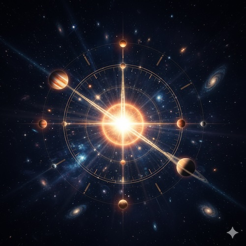

Chapter 3. The Alphabet of [MSA]: Markers and Their Meanings
Table of Contents:
3.1 Principles for Selecting Astrological Markers
3.2 The Language of Describing Cycles: Astrological Measures
3.3 The Coordinate System for Deriving Marker Meanings
3.4 The Planetary Markers: From the Moon to Pluto

Introduction: From Mechanism to Markers
Chapters 1 and 2 established the foundation: we exist within the process of [Field], which develops cyclically in Time (Chapter 1), and we interact with it through a unified mechanism of Synchronization, Resonant Imprint, and Resonance (Chapter 2).
Now a practical question arises: what specific markers do we use to track the rhythms of [The Field]?
We cannot "observe" the process of [Time] directly. But we can observe stable, repeating cycles in the physical world that mark this process. The planets of the Solar System are such ideal markers.
However, two critical objections arise:
- Selection: Why these specific objects? Why not stars, asteroids, or comets? On what basis does [MSA] select its specific set of markers?
- Scale: How can a human being resonate with the cycle of Pluto (~248 years) if our biological lifespan is much shorter? How can we synchronize with something we cannot live through?
This chapter answers these questions. We will provide a rigorous justification for the selection of markers and introduce the concept of the Horizon of Perception, showing that planetary meanings are not arbitrary myths, but logical derivatives of their orbital cycles relative to human life.
3.1 Principles for Selecting Astrological Markers
3.1.1 The Three Fundamental Criteria
[MSA] uses only the Sun/Earth, the Moon, and the planets (from Mercury to Pluto) as markers of temporal cycles. This choice is not arbitrary or based on tradition but follows from a combination of three strict criteria:
Criterion 1: The Principle of Systemic Integrity
Only objects that are stable, integral parts of the gravitationally bound Solar System as a unified whole are considered.
What this excludes:
- Stars—they are an external backdrop, not gravitationally bound to our system.
- Comets—their orbits are unstable; they may leave the system or disintegrate.
The logic: If [The Field] has a structure, the markers of its rhythms must belong to a single, stable structure.
Criterion 2: The Principle of Cyclical Predictability
Only cycles that are long-term stable and mathematically predictable for centuries and millennia are used.
What this excludes:
- Cycles of solar activity (sunspots, flares)—although they affect Earth, their length varies (9-14 years) and cannot be precisely predicted.
- Geomagnetic storms and other variable phenomena.
The logic: Markers must be reliable "clocks." Only stable orbital cycles provide the necessary precision and predictability.
Criterion 3: The Principle of Hierarchical Significance
Within the system, not all objects are selected, but only those that play a key, structure-defining role in the architecture of the Solar System.
This significance is determined not just by mass, but by the object's unique role in maintaining the system's stability and structure.
What this excludes:
- Asteroids—although part of the system, they represent a "belt" of numerous small objects that do not form a single, structurally significant rhythm comparable to a planet's.
The logic: [MSA] studies the fundamental rhythms of [The Field], not all possible fluctuations. Only structurally significant elements create such fundamental rhythms.
3.1.2 The Special Case: The System's Boundary and the Inclusion of Pluto
Applying the three criteria to most objects yields a clear result. But there is one special case that requires separate justification: the inclusion of Pluto and the exclusion of subsequent trans-Neptunian objects (TNOs).
The Problem:
After the discovery of Eris, Makemake, Haumea, and other TNOs, a question arose: if Pluto is included in the system of markers, why aren't the other large objects in the Kuiper Belt included?
Traditional astrology appeals to history ("Pluto was discovered first"), but this is not a logical justification. [MSA] provides a strict answer based on The Principle of the Dynamic Boundary.
The MSA Solution: The Principle of the Dynamic Boundary
This principle states: the effective boundary of a stable system is defined not by distance, but by the final key mechanism that ensures its long-term structural stability.
In our Solar System, this final stabilizing mechanism is the stable 2:3 orbital resonance between Neptune and Pluto.
What this means:
- In the time it takes Neptune to complete two full orbits (≈330 years), Pluto completes almost exactly three orbits (≈248 years × 3 ≈ 744 years, which is close to 330 x 2 = 660 years, accounting for orbital variations).
- This resonance is not a coincidence but a stable configuration that prevents gravitational chaos in the outer region of the system.
- It acts as a "lock," stabilizing the entire outer structure.
Therefore, [MSA] considers Neptune and Pluto not as two separate markers, but as a single, inseparable resonant pair that forms this dynamic boundary:
- Neptune marks the beginning of the "deep field" of the collective unconscious.
- Pluto, as its resonant partner, marks the farthest, yet predictable and stable, rhythm of this structure.
What lies beyond the boundary:
Objects beyond Pluto's orbit (Eris, Sedna, etc.) belong to a different dynamic class—the scattered disc. They:
- Are not part of the key 2:3 resonant structure.
- Have less stable or excessively long orbits.
- Their structural role in the overall architecture of the system has not yet been determined to be fundamental.
[MSA] works only with those rhythms that form the proven stable framework of the system.
Conclusion:
The inclusion of Pluto in [MSA] is not a nod to tradition or an emotional attachment, but a direct consequence of applying the Principle of the Dynamic Boundary. Pluto is not the "last planet," but the marker of the outer boundary of the Solar System's stable framework.
3.2 The Language of Describing Cycles: Astrological Measures
Now that we have defined which objects are used as markers, we need a language to describe how they mark the cycles of [The Field].
In [MSA], each planetary cycle is viewed as a developmental process with an internal structure. To describe this process, the following key measures are introduced:
Unit of Time for a Celestial Body:
The time interval during which an object moves one degree along its apparent path.
Why this is needed: This measure allows us to compare the "speeds" of different cycles and understand the level of detail with which each marker "reads" time. Fast markers (Moon, Mercury) provide high "resolution," while slow ones (Uranus, Neptune, Pluto) provide low resolution.
The standard: The Earth's daily cycle, where the Sun's passage of one degree corresponds approximately to one day.
Planning Horizon:
This is the first, active half of the full cycle—from the moment of conjunction (0°, the beginning) to the moment of opposition (180°, the culmination).
Why this is needed: This time interval corresponds to the period during which one can actively realize a project or initiative related to the planet's principle, achieving its maximum external manifestation.
The meaning: This is the "time for action," when the cycle's energy is directed outward and is available for conscious use.
Full Cycle:
This is the total time from one conjunction to the next (360°).
Why this is needed: The full cycle describes the entire process from the birth of an impulse to its complete assimilation. It includes two key phases:
- The Active Phase (0°-180°, the Planning Horizon)—the period of external manifestation and goal achievement.
- The Integration Phase (180°-360°)—the period of reflecting on results, learning lessons, and preparing for the next turn.
The meaning: This is the "lifespan" of a single impulse—from birth to death and rebirth.
These three measures allow us not just to name the duration of a cycle, but to understand its internal dynamics and practical significance for human experience.
3.3 The Coordinate System for Deriving Marker Meanings
Before describing the specific planets, we must answer a key question: how do we determine the meaning of each marker?
[MSA] does not borrow meanings from tradition or mythology. Meanings are logically derived from two fundamental coordinates and one dynamic principle.
Coordinate 1: The Orbital Threshold (Spatial)
As we established in Chapter 2, [The Field] is structured. The Earth's orbit serves as a natural threshold of perception for us, dividing the Solar System into two regions. This corresponds to the fundamental division of the human psyche into the inner world and external reality.
Inner Planets (Mercury, Venus):
Their orbits lie inside Earth's. From our perspective, they are always "near" the Sun (their maximum elongation is limited).
Logical connection: This links them to processes that are internal to our consciousness (the Sun) and precede any external action.
The Threshold System (Earth/Sun):
Our own position, the point of reference. It symbolizes the core of consciousness and will ("I"), which divides the internal from the external.
Outer Planets (from Mars onward):
Their orbits lie outside ours. They can appear at any point in the celestial sphere, including in "opposition" to the Sun.
Logical connection: This links them to the processes of manifesting will and interacting with the external world.
Coordinate 2: The Temporal Scale
The duration of each planet's cycle (Planning Horizon, Full Cycle) determines the scale and level of the psychological process it marks—from operational daily reactions to multi-generational transformations.
The logic: Short cycles correspond to fast, operational functions (thoughts, emotions). Long cycles correspond to slow, deep processes (worldview formation, generational transformations).
The Dynamic Principle: Modalities of the Cycle
Any cycle is not just a "duration" but a process with internal dynamics. To describe these dynamics, [MSA] uses a universal triad of modalities, which can be conveniently illustrated through the metaphor of a Life Stream:
[Impulse] (Cardinality):
Image: Water breaking over a ledge in a waterfall.
Description: This is the phase of sudden release of accumulated potential energy. The system receives a powerful, initiating push that gives it a new direction and speed. It is a moment of beginning, crisis, or qualitative leap.
In the cycle: Corresponds to the cardinal points—0°, 90°, 180°, 270° (sectors 1, 4, 7, 10).
[Flow] (Fixity):
Image: A river flowing in a deep and stable channel.
Description: This is the phase of maximum kinetic power. The energy gained from the impulse is concentrated in a single, sustained movement. The system is fully immersed in the process and has great inertia. It is a period of stable implementation, powerful action, and concentration.
In the cycle: Corresponds to the fixed phases (sectors 2, 5, 8, 11).
[Accumulation] (Mutability):
Image: A river that widens and slows before the next threshold, forming a pool.
Description: This is the phase of transition from movement to potential. Kinetic energy decreases, but mass and depth accumulate. The system distributes resources, analyzes the upcoming obstacle, and gathers strength for the next impulse. It is a period of adaptation, analysis, and preparation.
In the cycle: Corresponds to the mutable phases (sectors 3, 6, 9, 12).
Using this triple coordinate system (Orbital Threshold + Temporal Scale + Modalities of the Cycle), we can logically derive the meanings for each marker, analyzing them from two key perspectives: objective (heliocentric) and subjective (geocentric).
3.3.1 The Principle of the Horizon of Perception: Three Zones of Synchronization
Based on the temporal scale relative to the average human lifespan, [MSA] divides all markers into three distinct zones. This classification explains why we experience the influence of different planets so differently.
Zone 1: The Zone of Mastery (Moon through Saturn)
- Cycles: From ~1 month to ~29.5 years.
- Logic: These cycles repeat multiple times within a single human life.
- Result: We can consciously learn and master these principles. We make mistakes in the first Saturn cycle (youth), learn from them, and correct our course in the second (maturity). Therefore, this is the zone of personal responsibility and the accumulation of experience.
Zone 2: The Zone of Life Scenario (Uranus)
- Cycle: ~84 years.
- Logic: This cycle corresponds almost perfectly to the ideal length of a complete human life.
- Result: A human being lives through this cycle exactly once. We cannot repeat or fix the Uranus cycle. It frames our entire biography. Therefore, Uranus is the marker of individuation and the unique, non-repeatable life path. It represents the "ceiling" of personal synchronization.
Zone 3: The Zone of the Transpersonal / "Fate" (Neptune and Pluto)
- Cycles: ~165 and ~248 years.
- Logic: These cycles are significantly longer than a human life.
- Result:
- Impossibility of Full Synchronization: The [receiver] (human) dies before the transmission (cycle) is complete. We see the arc, but never the full circle.
- The Effect of Illusion (Neptune): Because we cannot see the whole picture, only a fragment, our consciousness tries to complete the pattern, giving birth to myths, faith, and collective illusions.
- The Effect of Fate or Force of Nature (Pluto): Since the cycle does not close for us individually, its action is perceived as the pressure of a relentless external force that cannot be controlled, only endured and navigated—much like a change in geological epochs or climate.
3.4 The Planetary Markers: From the Moon to Pluto
Now we are ready for a systematic description of each marker. Through evolution, our internal psychological processes have synchronized with the objective cycles of [The Field]. The principles we attribute to the planets (e.g., "thinking" for Mercury or "action" for Mars) are the names of psychological processes whose own internal dynamics and temporal scale are perfectly synchronized with the cycles of the corresponding planets.
Therefore, when we analyze a planet, we are not analyzing the object itself, but the corresponding process in the human psyche, matched by scale.
[THE MOON] The Principle of Instinctive Response and Adaptation
Temporal Characteristics:
- Unit of Time: ~2 hours
- Planning Horizon: ~15 days
- Full Cycle: ~29.5 days
Derivation of Meaning:
In the hierarchy of markers arranged by geocentric speed, the Moon is the fastest celestial body. Its principle logically describes the very first, primary, and pre-conscious stage of interaction with reality.
Before the mind (Mercury) has time to classify a stimulus, before the will (Sun) decides how to act, our subconscious (the Moon) instantly "reads" information directly from [The Field].
Key Principle:
The Moon is our interface to the memory of [The Field] and the foundation of our intuition. [The Field], as we recall from Chapter 1, is endowed with the memory of all past experience. The response from [The Field] comes not in words, but as a holistic feeling, an intuitive image, or a "gut feeling."
This intuitive "report" is instantly transmitted to the body, triggering a primary instinctive response along the axis of "safe/dangerous," "mine/not mine," "comfortable/uncomfortable."
Thus, the Moon governs:
- Intuitive recognition of patterns and situations.
- Formation of habits and subconscious programs.
- Automatic reactions based on all accumulated experience—both personal and collective.
- Emotional memory and the sense of security.
Its physical characteristics confirm this role:
- The fastest cycle (~29.5 days) corresponds to the rhythm of the most basic, automatic adaptations—changes in mood, biological cycles, and habit formation.
- Its gravitational influence on the tides symbolizes our "inner tides"—intuitive insights and instinctive impulses that "rise" from the depths of the subconscious.
The Moon and Reactivity:
As the fastest marker, the Moon also indicates a person's degree of reactivity—how quickly and automatically they respond to external stimuli. A strong or harmoniously aspected Moon in a natal chart suggests well-developed intuition and adaptability. A challenged Moon may indicate excessive reactivity, emotional instability, or difficulties with feeling secure.
Possible Roles and Actions:
When the lunar principle is dominant, a person's life is built around satisfying basic needs—both their own and others'—and creating a safe, adaptive environment. The primary driving force becomes not conscious goals, but subconscious impulses, instincts, and emotional states.
This is expressed in a natural inclination toward roles and activities related to:
- Caring and nurturing: parent, educator, nanny, social worker.
- Nourishment and sustenance: chef, farmer, nutritionist.
- Psychology and emotional work: psychologist, therapist, counselor working with the subconscious and trauma.
- Creating a "home" and comfort: interior designer, real estate agent, homemaker.
- Working with public sentiment: PR specialist, marketer working with the collective "tides" of the public subconscious.
[MERCURY] The Principle of Mental Processing and Classification
Temporal Characteristics:
- Unit of Time: ~6 hours (average geocentric speed ~1° per day)
- Planning Horizon: ~44 days
- Full Cycle: ~88 days
Derivation of Meaning:
Following the instantaneous subconscious response (the Moon), the next fastest process engages—the mental one. Mercury, as an inner planet with a cycle of ~3 months, marks this specific stage: the neutral identification and classification of a stimulus.
Key Principle:
Mercury is our "operating system," which answers the question "What is this?" Its task is to attach a verbal label to an object or phenomenon, place it in a mental "file cabinet," and establish logical connections with other known objects.
Being an inner planet, this process occurs within consciousness. Its fast cycle (~3 months) corresponds to the operational processing of facts, learning, and establishing logical connections.
Mercury creates our mental map of reality—a system of categories, concepts, and logical links through which we interpret the world. External manifestations (speech, writing, communication) are merely the consequence of this primary internal act of classification.
Possible Roles and Actions:
If the principle of Mercury is dominant, the individual's main focus is on the internal processes of thinking, analysis, and cognition. The motivation becomes the need to understand, connect facts, and build logical chains.
This is expressed in an inclination toward:
- Intellectual activities: scientist, analyst, programmer, researcher.
- Information transfer: writer, teacher, journalist, translator, lecturer.
- Working with data: accountant, statistician, librarian.
The key need is for mental clarity, continuous learning, and information exchange.
[VENUS] The Principle of Internal Evaluation and Value Formation
Temporal Characteristics:
- Unit of Time: ~15 hours (average geocentric speed ~1° per day)
- Planning Horizon: ~112 days
- Full Cycle: ~225 days
Derivation of Meaning:
After a stimulus has been instinctively "felt" (the Moon) and intellectually "identified" (Mercury), the stage of forming a subjective attitude begins. Venus, as an inner planet with a cycle of ~8 months, marks this very process.
Key Principle:
Venus is our system of internal evaluation, which answers the questions "Do I like this? Is it beautiful? Is it valuable to me?"
It translates the primary lunar impulse of "comfort" into a more complex aesthetic sense, and a Mercurial fact into a personal preference. Its slower cycle (~8 months) is perfectly suited not for an immediate reaction, but for the process of forming stable values and attachments—developing relationships, realizing creative projects, and accumulating what we consider beautiful and valuable.
Venus creates our "value compass," which determines all our subsequent choices—from partners to professions, from lifestyle to aesthetic tastes.
Possible Roles and Actions:
When the Venusian principle prevails, the primary motivation is to create and live in accordance with one's internal value system. The individual seeks to surround themselves with what they consider beautiful, pleasant, and valuable.
This is expressed in an inclination toward:
- Art and aesthetics: artist, designer, stylist, musician, decorator.
- Appraisal and harmonization: art critic, appraiser, diplomat.
- Finance as a measure of value: financial analyst, investor.
- Creating harmonious environments: landscape designer, florist.
The key need is to live out one's desires, find aesthetic satisfaction, and feel a sense of internal and external harmony.
[EARTH/SUN] The Principle of Conscious Will and Self-Identification
Temporal Characteristics:
- Unit of Time (standard): 1 day
- Planning Horizon: 0.5 years
- Full Cycle: 1 year
Derivation of Meaning:
The Earth's annual cycle around the Sun is the standard of reference for [MSA], as it sets the most fundamental and consciously perceived rhythm of human life—the change of seasons, the year as a measure of planning and survival.
As the threshold system in our cosmic hierarchy, the Earth/Sun symbolizes the boundary between the internal and the external, between psychological processes (inner planets) and actions in the world (outer planets).
Key Principle:
In this system, the Sun is not just a celestial body, but the marker of the primary life impulse, conscious will, and individual self-awareness. It symbolizes the core of the personality, the fundamental impulse of "I AM!" around which all other psychological functions are organized.
Its cycle is not just one among many, but the one that defines the very possibility of conscious existence and goal-setting. It is the center, relative to which all other functions find coordination and meaning.
The Sun represents:
- Conscious will and the ability to set goals.
- Self-identification and the sense of "I."
- Creative vitality and life force.
- Individuality and unique self-expression.
Possible Roles and Actions:
If the principle of the Sun is dominant in the personality structure, the primary motivation becomes conscious self-realization, creative self-expression, and the drive to be the center of one's own universe. Such a person will strive for roles where individual will, charisma, and personal responsibility are important:
- Leadership and management: executive, director, project manager.
- Creative self-expression: artist, actor, performer.
- Creating one's own: entrepreneur, company founder, author of a unique methodology.
The key need is to shine, to be seen and recognized, to act in accordance with one's inner vision, and to leave a mark of one's individuality on the world.
An Important Note on the Iterative Nature of the Inner Planets:
The described sequence (Moon → Mercury → Venus → Sun) is not a one-time act but an iterative cycle. When faced with a complex or uncertain situation, our consciousness "runs" information through this circuit multiple times.
Each new fact (Mercury) changes our bodily response (Moon) and emotional evaluation (Venus), which leads to an adjustment of the volitional decision (Sun) and prompts further information gathering. This feedback loop continues until a final, stable attitude toward the object is formed and a conscious decision to act is made.
This iterative process explains why a seemingly "simple" decision can sometimes take time—we are going through several rounds of aligning all four functions until we reach an internal consensus.
[MARS] The Principle of Active Will and Manifestation in the External World
Temporal Characteristics:
- Unit of Time: ~2 days
- Planning Horizon: ~1 year
- Full Cycle: ~2 years
Derivation of Meaning:
Mars occupies a unique position: it is the first planet with an orbit external to Earth's. Its cycle is significantly longer than the annual cycle of the Earth/Sun and the cycles of all inner planets. This positions Mars as the principle associated with the active manifestation of will in the external world, requiring medium-term planning and directed effort.
Key Principle:
If the Earth/Sun represents consciousness and the will to live, and Venus represents personal desires and values, then Mars represents the "principle of active engagement," aimed at achieving those desires and protecting one's interests in the external environment.
Mars is the transition from the inner world to external action. This correlates with:
- The instinct for self-preservation and defense: active measures to defend one's boundaries, interests, and physical safety. This includes determination, courage, assertiveness, and in extreme cases, aggression or conflict.
- Proactivity and initiative: the ability to initiate actions, overcome obstacles, and achieve set goals. It is the principle of "doing" and self-assertion.
- Physical energy and endurance: a connection to bodily strength, the capacity for sustained effort, and competition.
- Primary social interaction: the need to cooperate to achieve common goals (in a team or group) or to compete and protect "one's own."
Events and processes related to the Mars cycle (1-2 years) often require consistent effort, skill development, and the ability to withstand pressure for several months or even up to a couple of years.
Possible Roles and Actions:
An inclination toward professions that require decisiveness, physical activity, the ability to work with tools or machinery, manage processes, or lead others:
- Action and overcoming: surgeon, soldier, athlete, coach.
- Working with tools: engineer, mechanic, construction worker.
- Entrepreneurship: startup founder, project manager.
The need for active self-realization, competition, and overcoming challenges. May involve temporary but active participation in groups or projects requiring joint effort.
[JUPITER] The Principle of Social Integration and Worldview Expansion
Temporal Characteristics:
- Unit of Time: ~12 days
- Planning Horizon: ~6 years
- Full Cycle: ~12 years
Derivation of Meaning:
Jupiter, as the first and largest of the gas giants, marks a qualitative leap in temporal scale. Its active cycle phase (Planning Horizon) is approximately 6 years.
This six-year period elevates a person to a new level of interaction with the world—the level of social integration, broadening horizons, and forming a wider worldview.
Key Principle:
If the one-year horizon of Mars corresponds to tactical actions, the six-year horizon of Jupiter allows for the implementation of medium-term social strategies:
- Obtaining a higher education and finding a first serious job.
- Achieving significant career growth within a single company or project.
- Developing a business from a startup to a stable enterprise.
- Fully adapting and establishing oneself in a new country or social environment.
Jupiter correlates with the principle of growth, expansion, optimism, and the drive to find one's authoritative place within a larger social or ideological system. The full 12-year cycle includes a subsequent phase of integrating this experience and reflecting on the social status achieved.
Possible Roles and Actions:
When the Jupiterian principle is dominant, the primary motivation is growth and expansion. The individual seeks to move beyond personal experience and occupy an authoritative position in a broader social or intellectual context:
- Expanding knowledge and worldview: research scientist, philosopher, expert, strategist.
- Social integration and influence: lawyer, public figure, politician, senior manager.
- Mentorship and knowledge transfer: teacher, university professor, mentor, consultant.
- Cultural and geographical expansion: explorer, publisher, producer, philanthropist.
[SATURN] The Principle of Structuring, Formalization, and Long-Term Responsibility
Temporal Characteristics:
- Unit of Time: ~25 days
- Planning Horizon: ~15 years
- Full Cycle: ~29.5 years
Derivation of Meaning:
The cycle of Saturn (nearly 30 years) is the next qualitative leap after Jupiter's 12-year cycle. If Jupiter governs expansion and integration into existing systems, Saturn's cycle covers the period during which a person goes through the fundamental stages of maturation, forming their own stable life structure, and accepting long-term responsibility.
Key Principle:
This planning horizon (~15 years) is comparable to an entire generation. As the last planet easily visible to the naked eye, Saturn symbolically correlates with the concepts of frameworks, boundaries, form, discipline, and time as a measure of maturity.
It represents the principle of crystallizing experience, building reliable systems, and achieving mastery through persistent effort. If Jupiter says, "expand," Saturn says, "structure and consolidate."
Saturn is associated with:
- Forming stable structures: creating systems that will operate for decades.
- Accepting fundamental responsibility: for oneself, for others, for what one has created.
- Achieving mastery: through discipline, patience, and systematic work.
- Establishing boundaries: both protective and restrictive.
Possible Roles and Actions:
An inclination toward activities related not to expansion within systems, but to creating, administering, and maintaining those systems themselves:
- Managing structures: top-level executive, administrator, company founder.
- Creating legal frameworks: legislator, judge, statesman.
- Building material structures: architect, builder, design engineer.
- Developing methodologies: head of a scientific school, methodologist.
The key need is to achieve mastery, reliability, stability, and to leave behind a durable, functioning legacy.
[URANUS] The Principle of Transgression and the Generational Renewal of Systems
Temporal Characteristics:
- Unit of Time: ~70 days
- Planning Horizon: ~42 years
- Full Cycle: ~84 years
Derivation of Meaning:
The meaning of Uranus in [MSA] is derived from its position as the first planet beyond the orbit of Saturn—the marker of structure, tradition, and established boundaries. Uranus logically symbolizes "that which lies beyond": the principle of transgression, deviation from the norm, and the drive for freedom from existing frameworks.
Key Principle:
Its active cycle phase (~42 years) corresponds perfectly to the period of active social and creative life of a single generation. Conventionally, this is the time from when a generation begins to form its own values, distinct from their parents' (around 20-25 years old), until the moment they themselves become the "older generation" and pass the baton to the next (around 60-65 years old).
Thus, Uranus marks not so much personal rebellions, but generational cycles of renewal: the process by which a new generation creates and implements its own alternative systems, ideas, and lifestyles that "hack" the established order of the previous generation.
Uranus is associated with:
- The revolutionary impulse: a break with the old order.
- Innovation and invention: the creation of something fundamentally new.
- Freedom and independence: the rejection of imposed limitations.
- Collective renewal: generational shifts in consciousness.
Possible Roles and Actions:
An inclination toward activities that challenge established norms:
- Pioneers and reformers: inventor, revolutionary, activist.
- Creators of alternatives: founder of an alternative teaching or community.
- Scientists on the cutting edge: researcher of new paradigms, futurist.
- Non-conformist philosophers: thinkers who challenge tradition.
The key motivation is not destruction for its own sake, but the creation of a space free from the limitations of the past.
[NEPTUNE] The Principle of Dissolving Boundaries and Synchronizing with the Collective Background
Temporal Characteristics:
- Unit of Time: ~138 days
- Planning Horizon: ~82 years
- Full Cycle: ~165 years
Derivation of Meaning:
Positioned beyond Uranus, Neptune symbolizes the next step away from the Saturnian structure. If Uranus is a conscious move beyond boundaries (creating an alternative), Neptune is the complete dissolution of the boundaries themselves.
Key Principle:
It marks the slow, background process of blurring clear categories and meanings at the collective level. Its active phase (~82 years), comparable to a full human lifespan, means that an entire generation is born, lives, and dies immersed in a single, dominant collective "background"—be it a pervasive ideology, a global faith, a mass illusion, or a shared dream.
This background is perceived not as one option among many, but as reality itself. Only when the cycle completes and a new one begins does it become apparent that it was just one of the possible "dreams" of the collective consciousness.
Neptune correlates with:
- The collective unconscious: the archetypes and shared dreams of an era.
- The dissolution of the "I" boundaries: merging with something larger.
- Irrational currents: faith, ideology, mass movements.
- The transcendent search: the drive to go beyond the material.
Possible Roles and Actions:
- Deep empathy and merging: psychologist, healer, musician (music best conveys Neptunian states).
- Immersion in the "spirit of the times": a tendency to fully identify with the dominant ideologies of one's era.
- Striving for the transcendent: spiritual practices, religion, service to high ideals.
- Escape from reality: in a negative expression—addictions, escapism, loss of boundaries.
[PLUTO] The Principle of Instinctive Survivability and Regenerative Transformation
Temporal Characteristics:
- Unit of Time: ~207 days
- Planning Horizon: ~124 years
- Full Cycle: ~248 years
Derivation of Meaning:
Pluto, invisible to the naked eye and in a stable 2:3 resonance with Neptune, marks the slowest of the known stable rhythms. Its role is defined not by its mass, but by its unique orbital resonance, which makes it a key marker of dynamics at the farthest frontiers of the system.
Key Principle:
Its principle is not so much the conscious destruction of outdated systems (which is closer to Uranus), but an instinctive, purifying reaction of the organism of [The Field] to what has become non-viable and toxic under the influence of Neptune's slow, dissolving currents.
This is a crisis that comes not from the mind, but from the deepest survival instincts. When a system has accumulated too much "dead tissue" (obsolete beliefs, toxic structures, suppressed material), Pluto marks the moment when an inevitable "surgical operation" occurs—painful, but necessary for survival.
Pluto's extremely slow and uneven cycle (about 248 years) marks the rhythm of transformation of deep socio-psychological structures that exist over several generations. This is not the cycle of a civilization's evolution as a whole, but rather the life cycle of its fundamental, often unspoken, attitudes toward power, collective resources, and survival.
Pluto is associated with:
- The survival instinct: at the deepest, most archaic level.
- Crisis and death/rebirth: the destruction of the non-viable.
- Power and control: as means of ensuring survival.
- Taboo and suppressed content: what is hidden in the "basement" of the collective psyche.
Possible Roles and Actions:
An individual becomes particularly sensitive to this rhythm of transforming deep-seated attitudes. Their life path may be linked to an intense experience of dismantling rigid beliefs, behavioral patterns, or ways of life inherited from the collective past.
This can manifest in an inclination toward roles that require engagement with extreme states, crises, and processes of "purification":
- Crisis work: crisis manager, emergency room doctor, surgeon.
- Working with deep layers: psychotherapist working with trauma and shadow aspects.
- Working with the taboo: investigator, pathologist, researcher of forbidden topics.
- Purification and disposal: in both a literal and figurative sense—working with what society prefers to ignore.
The key challenge is not to cling to obsolete collective and personal structures, but to consciously participate in the process of their painful but necessary renewal.
Summary of Chapter 3
We have established that the choice of markers in [MSA] is not arbitrary but follows from three strict criteria: systemic integrity, cyclical predictability, and hierarchical significance. Special attention was given to justifying the inclusion of Pluto through the Principle of the Dynamic Boundary, which shows that Pluto is not a tribute to tradition but a marker of the real boundary of the Solar System's stable framework.
We introduced a language for describing cycles (unit of time, planning horizon, full cycle) and a coordinate system for deriving meanings (orbital threshold, temporal scale, modalities of the cycle), which allow us not to postulate, but to logically derive the meaning of each marker.
Finally, we systematically described all the planetary markers from the Moon (the fastest, primary response) to Pluto (the slowest, deepest rhythm of transformation), showing how each corresponds to a specific scale and level of psychological processes in a human being.
These markers are not the causes of events, but the hands on the clock face of the process of [The Field]. Their cycles are not influences, but rhythms with which we are in constant synchronization. Understanding these rhythms is the foundation of astrological navigation.